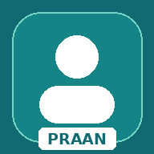

আপনি এখন অফলাইনে আছেন
ইন্টারনেট সংযোগ ফিরে এলে সাইটটি আবার খুলুন। নিরাপত্তার জন্য অ্যাডমিন ড্যাশবোর্ড, ব্যক্তিগত প্রোফাইল এবং নিবন্ধনের তথ্য অফলাইনে ক্যাশ করা হয় না।
খোলা ফর্ম থেকে আগে নিরাপদে কিউ করা ডাটা পরে লগইন করে পাঠাতে পারবেন।
PRAAN · Secure Offline Experience · v1.8.0